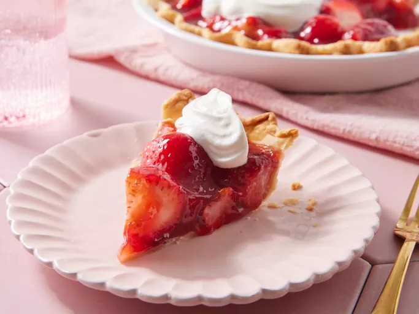

Strawberry Pie

Description
This strawberry pie is my favorite pie, and it's very easy to make.
I got the recipe many years ago in North Jersey from the Sussex County Strawberry Farm.
Ingredients
- 1 quart fresh strawberries, hulled
- 1 (9 inch) pie crust, baked
- 1 cup white sugar
- 3 tablespoons cornstarch
- ¾ cup water
- ½ cup heavy whipping cream
Steps
Gather all ingredients.
Arrange 1/2 of strawberries in baked pastry shell. Place remaining strawberries in a medium saucepan.
Add sugar to the strawberries in the saucepan; place over medium heat and bring to a boil, stirring frequently.
Whisk cornstarch and water together in a small bowl. Gradually stir cornstarch mixture into boiling strawberry mixture. Reduce heat and simmer mixture until thickened, about 10 minutes, stirring constantly.
Pour cooked strawberry mixture over berries in pastry shell. Refrigerate until chilled and set, at least 3 hours.
Before serving, whip cream in a medium bowl until soft peaks form.
Serve each slice of pie with a dollop of whipped cream. Enjoy!